東京大学 2019年 理科 第2問
問題
一辺の長さが1の正方形ABCDを考える。3点P, Q, Rはそれぞれ辺AB、AD、CD上にあり、3点A, P, Qおよび3点P, Q, Rはどちらも面積が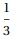の三角形の3頂点であるとする。
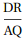の最大値、最小値を求めよ。
解答
A(0,0),B(1,0),C(1,1),D(0,1)
P(p,0)(0<p<1),Q(0,q)(0<q<1),R(r,1) (0<r<1)とする。
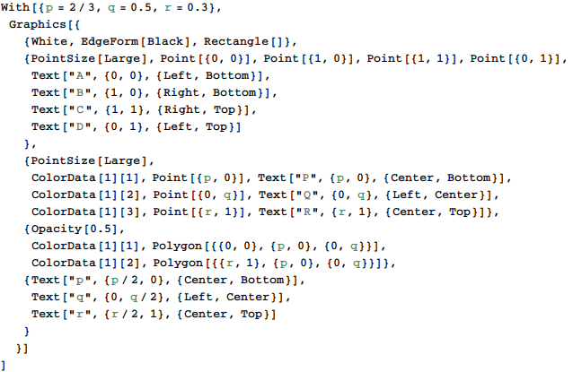
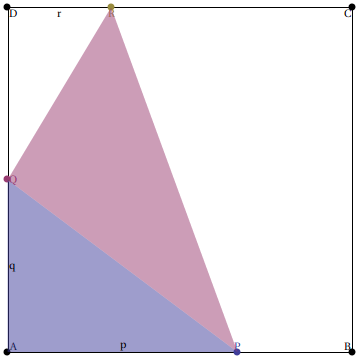
△APQおよび△PQRの面積がだから、
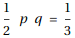および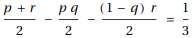
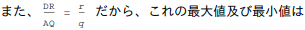
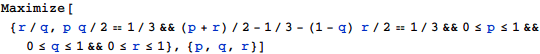
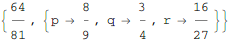
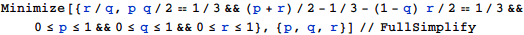
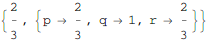
補足・感想
方程式を立てるところまでは手計算と同じで、最大値と最小値を求める部分だけMathematicaにやらせる。